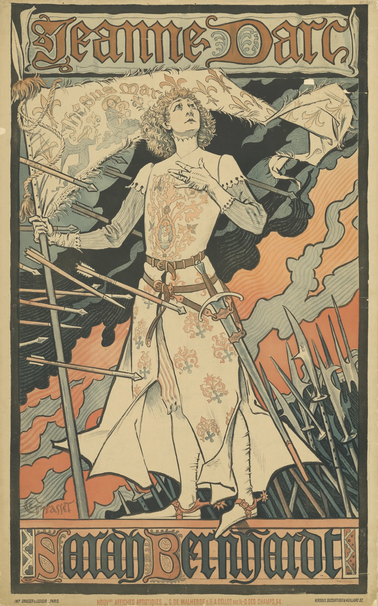
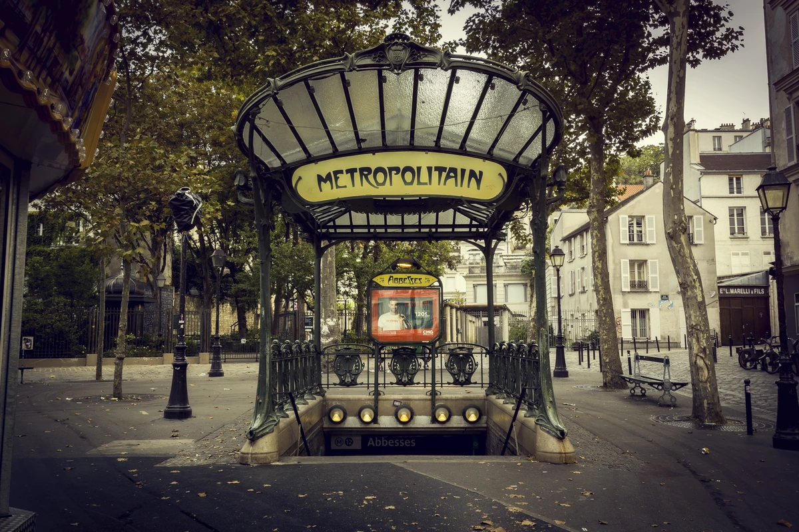
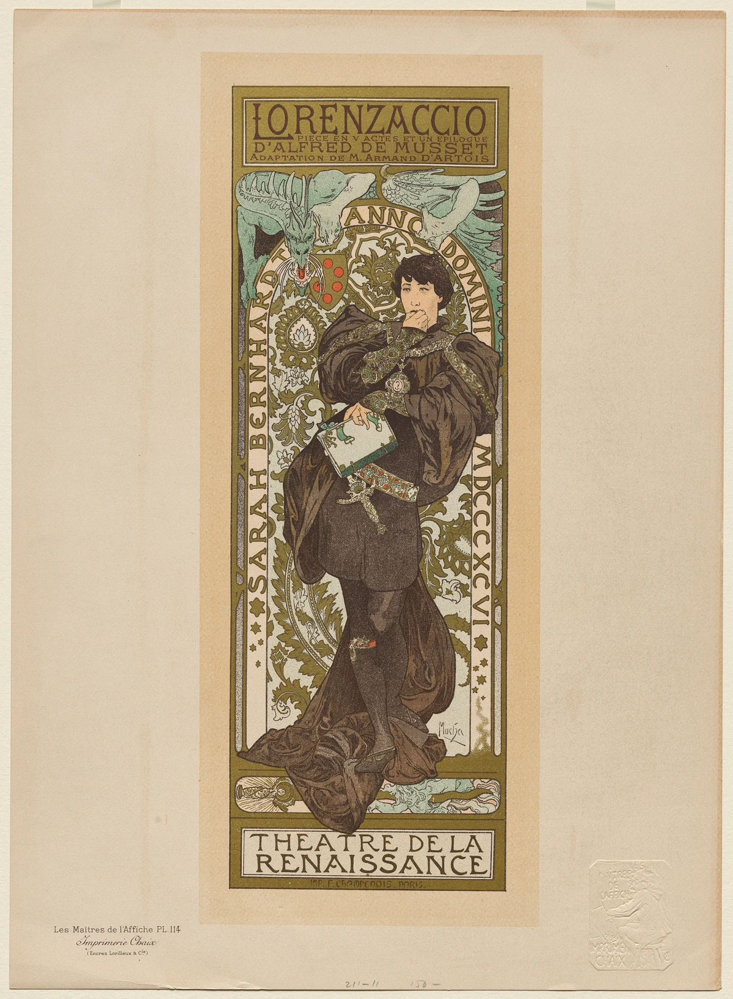
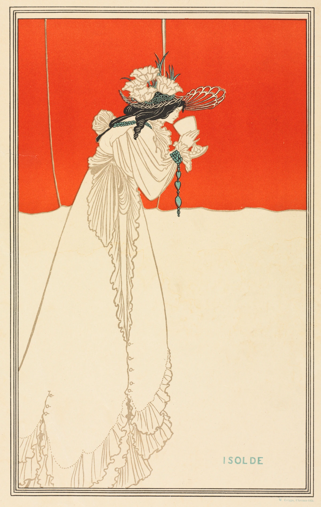
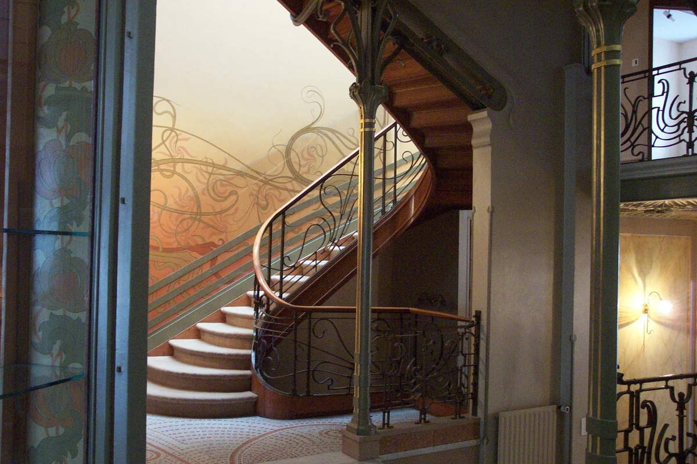
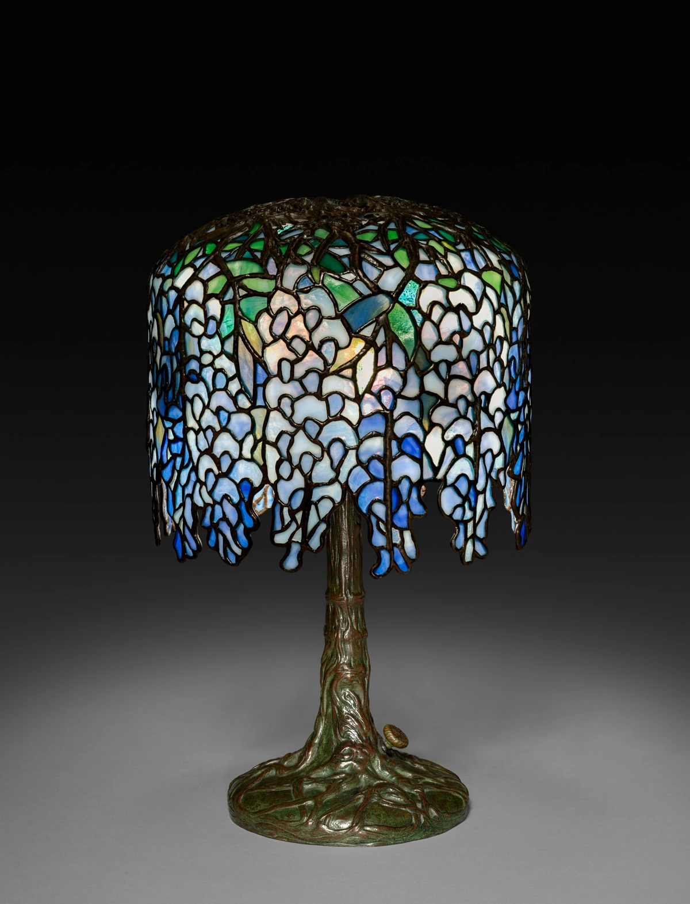
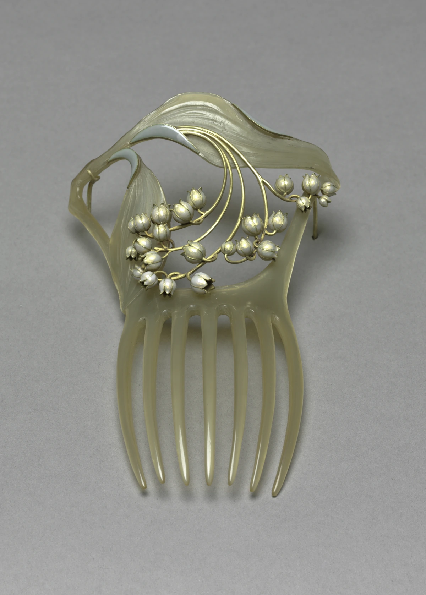

曲線だけでは、できていない。
煙や旗はうねり、矢や槍はまっすぐ斜めに走っています。濃い輪郭線で囲んだ色の面と、大きな文字が、人物を強く見せています。「曲線があるから」という一つの理由だけで作品を分類しないことが大切です。
作品・制作の例13件を紹介しています。実作品画像10点、参照・関連画像0点。画像の収集は継続中です。
暮らしの形を新しくした、国際的なデザインの動き
Art Nouveau
花や葉を描くだけでなく、植物のように伸びる線で、ものの形そのものをつくる。
そんな試みが、ポスターからいす、照明、建物へ広がりました。
アール・ヌーヴォーを、まずは「線が何をしているか」から見てみましょう。
実作品を見る

画像を表示できませんでした。下の出典ページで確認できます。
ウジェーヌ・サミュエル・グラッセ（Eugène Samuel Grasset） / 1889–1890年（所蔵館の制作年表記）
高さ118.8cmの大判ポスターです。所蔵館によると、ベルナールが描き直しを求めた図案で、この版が実際に街へ掲出されたかは確認できていません。印刷の技法は所蔵館の記録に未記載です。
煙や旗はうねり、矢や槍はまっすぐ斜めに走っています。濃い輪郭線で囲んだ色の面と、大きな文字が、人物を強く見せています。「曲線があるから」という一つの理由だけで作品を分類しないことが大切です。
所蔵館によると、ベルナールは体の形や顔の表情を気に入らず、描き直しを求めました。作者だけでなく、依頼した人の考えもポスターに関わっています。この版がそのまま街に貼られたとは断定しません。
Eugène Samuel Grasset, Jeanne d’Arc. Sarah Bernhardt, 1889–1890. Staatliche Museen zu Berlin, Kunstbibliothek, 1895,686. Photo: Dietmar Katz. Public Domain Mark 1.0.
出典で作品・資料を見る ↗Public Domain Mark 1.0
所蔵館の個別Public Domain Mark指定。Grassetは1917年没。
個別作品ページのFotonachweis（画像クレジット）がStaatliche Museen zu Berlin, Kunstbibliothek / Dietmar KatzおよびPublic Domain Mark1.0を明示。
原画像の全画面と縦横比を保って縮小し、WebP形式で表示しています。切り抜きや色補正はしていません。
表示用画像は、全画面と縦横比を保った縮小WebPです。原画像は出典先で公開されています。
出典先の原画像を開く ↗画像の利用条件 ↗Aspect-preserving LANCZOS reduction, WebP quality92/method6; ICC retained when present. No crop, upsampling, colour correction, overlays or retouch.
実作品を見る

画像を表示できませんでした。下の出典ページで確認できます。
エクトール・ギマール（Hector Guimard） / 1900年制作、1974年に移設／写真：2014年9月13日
オテル・ド・ヴィル駅のために1900年につくられ、1974年にアベス駅へ移された入口。MoMA所蔵の入口部材とは別個体。2014年の写真で、現代の広告や案内板も写る。
ガラスを区切る線が、上に向かって広がっています。曲がる柱や手すりだけでなく、雨をよける屋根の形も見てみましょう。
「METROPOLITAIN」の文字と、その周りの枠に丸みがあります。人を地下鉄へ案内する文字が、建物の形と一緒に考えられています。
Hector Guimard, Abbesses Métro entrance (originally Hôtel-de-Ville). Photo: Thomas Geoffray, 13 September 2014, Wikimedia Commons, CC BY-SA 3.0. Display images resized and converted to WebP; no crop.
出典で作品・資料を見る ↗CC BY-SA 3.0 Unported
建築：Guimard（1942年没）。フランスの著作権財産権の死後70年の通常期間を経過。建築家の表示と作品の尊重を保ち、写真の著作権とは区別する。
撮影者Thomas Geoffrayによる個別ファイルのCC BY-SA 3.0 Unported指定。氏名・出典・ライセンス・変更内容を表示し、表示用派生画像にも同ライセンスを適用。
原画像の全画面と縦横比を保って縮小し、WebP形式で表示しています。切り抜きや色補正はしていません。
表示用画像は、全画面と縦横比を保った縮小WebPです。原画像は出典先で公開されています。
出典先の原画像を開く ↗画像の利用条件 ↗Aspect-preserving LANCZOS reduction, WebP quality92/method6; ICC retained when present. No crop, upsampling, colour correction, overlays or retouch.
実作品を見る

画像を表示できませんでした。下の出典ページで確認できます。
アルフォンス・ミュシャ（Alphonse Mucha） / 1896–1900年（所蔵館の表記）
ポスターの図案を小さく刷った、収集用の版画です。余白の図版番号は114。街に貼る原寸の広告ポスターとは、大きさも使い道も違います。
上に作品名、下に劇場名、人物の周囲にも文字があります。文字と絵を別々に置くのではなく、一つの縦長の形にまとめています。
紙の左下には「Les Maîtres de l’Affiche PL.114」と印刷されています。街に貼る大判のポスターそのものではなく、小さな版画として見ることが大切です。紙の広い余白も切り取らずに掲載しています。
Lorenzaccio（ロレンザッチョ／小型の版画）, 1896–1900年（所蔵館の表記）. Alphonse Mucha（アルフォンス・ミュシャ）. color lithograph. The Cleveland Museum of Art, The Harold T. Clark Educational Extension Fund, 1973.1018. CC0.
出典で作品・資料を見る ↗CC0 1.0 Universal
所蔵館の個別作品ページがOpen Access対象として複製・改変・配布を認める。
個別Open Access指定とCMA公式方針に基づく配信画像のCC0。
原画像の全画面と縦横比を保って縮小し、WebP形式で表示しています。切り抜きや色補正はしていません。
表示用画像は、全画面と縦横比を保った縮小WebPです。原画像は出典先で公開されています。
出典先の原画像を開く ↗画像の利用条件 ↗Aspect-preserving LANCZOS reduction, WebP quality92/method6; ICC retained when present. No crop, upsampling, colour correction, overlays or retouch.
実作品を見る

画像を表示できませんでした。下の出典ページで確認できます。
オーブリー・ビアズリー（画）／ウィリアム・グリッグス（印刷） / 1895年
美術雑誌『ザ・ステューディオ』の読者向けに配られた色刷り版画です。書籍のページや、広告ポスターではありません。
頭や手の近くには、細かな線が集まっています。下へ伸びる服のまわりには、広い明るい面が残ります。模様で埋めるだけでなく、何も描かない広さも画面の力になります。
この版画は、美術雑誌『ザ・ステューディオ』の読者向けにつくられました。本の挿絵そのものではありません。雑誌や印刷物が、遠くにいる人へ新しい表現を届ける役目をもちました。
Isolde（イゾルデ）, 1895年. Aubrey Beardsley（オーブリー・ビアズリー）／印刷：William Griggs（ウィリアム・グリッグス）. color lithograph on wove paper. The Cleveland Museum of Art, Gift of John Bonebrake, 2010.651. CC0.
出典で作品・資料を見る ↗CC0 1.0 Universal
所蔵館の個別作品ページがOpen Access対象として複製・改変・配布を認める。
個別Open Access指定とCMA公式方針に基づく配信画像のCC0。
原画像の全画面と縦横比を保って縮小し、WebP形式で表示しています。切り抜きや色補正はしていません。
表示用画像は、全画面と縦横比を保った縮小WebPです。原画像は出典先で公開されています。
出典先の原画像を開く ↗画像の利用条件 ↗Aspect-preserving LANCZOS reduction, WebP quality92/method6; ICC retained when present. No crop, upsampling, colour correction, overlays or retouch.
実作品を見る

画像を表示できませんでした。下の出典ページで確認できます。
アルフォンス・ミュシャ（Alphonse Mucha） / 1901–1902年
広告ポスターではなく、装飾図案の版画1枚です。所蔵館の年表記は1901–1902年。写真に見えるPL 38は図版上の番号で、書物全体の画像ではありません。版・刷の詳細は未確認です。
上の左では花がぎっしり重なり、右では輪郭を単純にした模様が並びます。下では茎が長く伸びています。一つの植物から、こんなに違う模様が生まれるのですね。
桃色や赤紫の花、青緑の葉を、黄褐色の線が囲んでいます。影で立体らしく見せるより、輪郭と色の広がりを生かした表現です。
下の葉は重なり合い、花のまわりには明るい余白があります。ぎっしりした場所と空いた場所を比べると、茎の長さがよくわかります。
Documents Decoratifs: Oriental Poppies, 1901–2. Alphonse Mucha (Czech, 1860–1939). Lithograph. The Cleveland Museum of Art, Mr. and Mrs. Charles G. Prasse Collection, gift in honor of the fiftieth anniversary of The Print Club of Cleveland, 1969.236. CC0.
出典で作品・資料を見る ↗CC0 1.0 Universal
Museum individual public-domain/Open Access eligibility; creator1860–1939,1901–02 print
Official API share_license_status=CC0 and exact image URL; individual object page authorizes reuse under CMA OA policy.
公式配信の原JPEGは無加工で保持し、拡大リンクから取得できます。ページ表示には縦横比と全画面を保った縮小WebPを使用（切り抜き・色補正なし）。原JPEGと各表示画像のサイズ・SHA-256を権利台帳に別記録。撮影者名は未確認のため推定しません。
画像の利用条件 ↗Uniform aspect-preserving LANCZOS resize; WebP quality92/method6; original ICC retained when present. No crop, color adjustment, retouch, or overlays.
実作品を見る

画像を表示できませんでした。下の出典ページで確認できます。
ヴィクトール・オルタ（Victor Horta） / 1893年依頼・1894年完成（ICOMOS評価書）／写真：2002年9月
階段室の一部を写した2002年の写真。建物全体や完成当時の状態を示す写真ではない。写真の暗さや色を、室内の常に変わらない特徴とは考えない。
手すりだけでなく、奥の壁にも、足元の床にも曲がる線があります。違う材料の部分を、同じ調子の線で結びつけています。
細い柱の上から、枝のような形が広がります。飾りだけを切り離さず、階段を支える部分や、上の空間とのつながりも見てみましょう。
Hôtel Tassel — Victor Horta. Photograph: Henry Townsend, September 2002, public-domain dedication, Wikimedia Commons (original upload, 2008).
出典で作品・資料を見る ↗Public domain dedication by photographer
建築：Horta（1947年没）。ベルギーの死後70年の保護期間を経過。現代写真の権利とは区別する。
撮影者Henry TownsendがCommons個別ファイルページで全世界のパブリックドメインに提供。認められない法域でも無条件の全目的利用を許諾。2008年初回アップロードの未切り抜き版を取得。
原画像の全画面と縦横比を保って縮小し、WebP形式で表示しています。切り抜きや色補正はしていません。
表示用画像は、全画面と縦横比を保った縮小WebPです。原画像は出典先で公開されています。
出典先の原画像を開く ↗画像の利用条件 ↗Aspect-preserving LANCZOS reduction, WebP quality92/method6; ICC retained when present. No crop, upsampling, colour correction, overlays or retouch.
実作品を見る

画像を表示できませんでした。下の出典ページで確認できます。
エクトール・ギマール（Hector Guimard） / 1907年頃
Cleveland所蔵の椅子1985.96を斜め前から見た1点です。パリ地下鉄入口とは別作品。1907年頃は館が示す制作年で、特定の建物の室内用と推定していません。
背の中央から上へ、木の支えが二つに分かれています。座面の下の横板もゆるく曲がり、背・座面・脚の線がつながって見えます。
木には流れるような溝、革の背当てには細い模様があります。革のまわりを縁取る小さな金属の鋲（びょう）も、点を並べた飾りになっています。
背の支えの左右には、細長いすき間があります。木だけでなく、その間の形も見てみましょう。斜めからの写真なので、座面の奥行きや脚の位置もわかります。
Hector Guimard, Chair, c. 1907. Pearwood with tooled leather back and seat. The Cleveland Museum of Art, Leonard C. Hanna Jr. Fund, 1985.96. CC0.
出典で作品・資料を見る ↗CC0 1.0 Universal
Museum individual open-access eligibility for this c.1907 work; creator1867–1942. Separate from photograph release.
Official API share_license_status=CC0 and exact image URL; individual object page authorizes reuse under CMA OA policy.
公式配信の原JPEGは無加工で保持し、拡大リンクから取得できます。ページ表示には縦横比と全画面を保った縮小WebPを使用（切り抜き・色補正なし）。原JPEGと各表示画像のサイズ・SHA-256を権利台帳に別記録。撮影者名は未確認のため推定しません。
画像の利用条件 ↗Uniform aspect-preserving LANCZOS resize; WebP quality92/method6; original ICC retained when present. No crop, color adjustment, retouch, or overlays.
実作品を見る

画像を表示できませんでした。下の出典ページで確認できます。
エミール・ガレ（Émile Gallé） / 1900年頃
Cleveland所蔵1983.225の全体写真1点。高さ23.4cm、径13.5cm。館の記録に従い1900年頃・エナメル彩ガラスとします。裏面や底面の刻印、工房内の制作分担はこの写真から推定しません。
紫や赤みのある花と、細い茎が器の表面に広がっています。紙の模様と違い、花の向きは器のふくらみに合わせて変わって見えます。
緑のガラスには、光を通して明るく見えるところと、色が濃く見えるところがあります。花につけた色と、器そのものの色を見分けてみましょう。
器の口は、まっすぐそろった円ではなく、少し波打っています。花の絵だけでなく、器の外側の線にも柔らかな動きがあります。
Vase, c. 1900. Emile Gallé (French, 1846–1904). Enameled glass; diameter: 13.5 cm (5 5/16 in.); overall: 23.4 cm (9 3/16 in.). The Cleveland Museum of Art, Gift of Dr. and Mrs. Roland Burelli, 1983.225. CC0.
出典で作品・資料を見る ↗CC0 1.0 Universal
Museum individual public-domain/Open Access eligibility; author1846–1904, c1900 work
Official API share_license_status=CC0 and exact image URL; individual object page authorizes reuse under CMA OA policy.
公式配信の原JPEGは無加工で保持し、拡大リンクから取得できます。ページ表示には縦横比と全画面を保った縮小WebPを使用（切り抜き・色補正なし）。原JPEGと各表示画像のサイズ・SHA-256を権利台帳に別記録。撮影者名は未確認のため推定しません。
画像の利用条件 ↗Uniform aspect-preserving LANCZOS resize; WebP quality92/method6; original ICC retained when present. No crop, color adjustment, retouch, or overlays.
実作品を見る

画像を表示できませんでした。下の出典ページで確認できます。
クララ・ウォルコット・ドリスコル（設計）／ティファニー・スタジオ（製作） / 1902–1910年頃
CMA所蔵2018.261の小型版。MetのTulip lampとは別作品。設計：Clara Wolcott Driscoll、制作：Tiffany Studios。
青や白の小さなガラスが、下へ垂れる藤の花をつくっています。かさの下の縁も、まっすぐではありません。花の房に合わせて、高さが変わります。
台から伸びる幹のような部分が、上の枝へと続きます。飾りと、ランプを支える役目を一緒に考えた形です。設計したドリスコルと、制作した工房の名前を分けて確かめます。
“Pony” Wisteria Lamp（小型の藤のランプ）, 1902–1910年頃. Clara Wolcott Driscoll（クララ・ウォルコット・ドリスコル）／Tiffany Studios（ティファニー・スタジオ）. leaded glass, bronze. The Cleveland Museum of Art, Bequest of Charles Maurer, 2018.261. CC0.
出典で作品・資料を見る ↗CC0 1.0 Universal
所蔵館の個別作品ページがOpen Access対象として複製・改変・配布を認める。
個別Open Access指定とCMA公式方針に基づく配信画像のCC0。
原画像の全画面と縦横比を保って縮小し、WebP形式で表示しています。切り抜きや色補正はしていません。
表示用画像は、全画面と縦横比を保った縮小WebPです。原画像は出典先で公開されています。
出典先の原画像を開く ↗画像の利用条件 ↗Aspect-preserving LANCZOS reduction, WebP quality92/method6; ICC retained when present. No crop, upsampling, colour correction, overlays or retouch.
実作品を見る

画像を表示できませんでした。下の出典ページで確認できます。
ルネ・ラリック（René Lalique） / 1900年頃
櫛の全体写真。角の動物種や制作分担は未確認。
髪に差す歯の上で、二枚の大きな葉が曲がっています。植物の絵を表面に足すだけでなく、櫛そのものの輪郭を植物の形に変えています。
半透明の葉、細い金色の茎、白い花を見比べましょう。館の記録では、動物の角、エナメル、金を使っています。エナメルは、ガラス質の材料を焼き付ける飾りの技法です。
Lily of the Valley Comb（スズランの櫛）, 1900年頃. René Lalique（ルネ・ラリック）. horn, enamel and gold. The Cleveland Museum of Art, Gift of Mrs. A. Dean Perry, 1981.49. CC0.
出典で作品・資料を見る ↗CC0 1.0 Universal
所蔵館の個別作品ページがOpen Access対象として複製・改変・配布を認める。
個別Open Access指定とCMA公式方針に基づく配信画像のCC0。
原画像の全画面と縦横比を保って縮小し、WebP形式で表示しています。切り抜きや色補正はしていません。
表示用画像は、全画面と縦横比を保った縮小WebPです。原画像は出典先で公開されています。
出典先の原画像を開く ↗画像の利用条件 ↗Aspect-preserving LANCZOS reduction, WebP quality92/method6; ICC retained when present. No crop, upsampling, colour correction, overlays or retouch.
演劇ポスター／色刷りリトグラフ
俳優サラ・ベルナールの舞台を伝えるポスター。人物を細長い画面に大きく描き、衣装、植物、文字、アーチを一つにまとめています。
作品・資料の出典を見る ↗原題：Gismonda
アルフォンス・ミュシャ（Alphonse Mucha） / 1894〜1895年（LACMA所蔵の版） / 演劇ポスター／色刷りリトグラフ
ミュシャ財団は1894年制作、1895年1月の公演用と説明しています。LACMA所蔵の版は5色刷り・2枚の紙で、高さは約213cm。画面で見ると小さくても、実物は人の背丈を超えるポスターです。
住宅・室内
階段の手すりや床の模様だけでなく、部屋のつながり方や光の広がりまで考えた家です。飾りと建物を支える構造が、一つの空間をつくります。
作品・資料の出典を見る ↗原題：Hôtel Tassel
ヴィクトール・オルタ（Victor Horta） / 1893年依頼・1894年完成（ICOMOS評価書による。家具はその後も制作） / 住宅・室内
ベルギーのブリュッセルにある住宅です。タッセル邸などオルタの邸宅群では、家具や取っ手まで含めた細部と、建物全体のまとまりが評価されています。
都市交通の入口／鋳鉄・溶岩石・ガラス
植物のような線が、案内の表示や明かりを支える部品になります。同じ形の鉄の部品をつくり、運び、組み立てやすくした例です。
作品・資料の出典を見る ↗原題：Entrance Gate to Paris Subway (Métropolitain) Station
エクトール・ギマール（Hector Guimard） / 1900年頃（MoMA所蔵の作品） / 都市交通の入口／鋳鉄・溶岩石・ガラス
鋳鉄（ちゅうてつ）は、溶かした鉄を型に流してつくります。ここで紹介するのはMoMAの所蔵作品。掲載写真のアベス駅入口とは別の個体です。地下鉄の入口には、屋根や囲いの違う型があります。
照明／色ガラス・青銅
色ガラスをつなぐ線が、花の輪郭にもなっています。ガラスの色だけでなく、光を通したときの見え方や、台座とのつながりを考えた照明です。
作品・資料の出典を見る ↗原題：“Tulip” lamp
ティファニー・スタジオ（Tiffany Studios、製作） / 1907〜1912年 / 照明／色ガラス・青銅
メトロポリタン美術館所蔵。台座には、青銅の網状の枠に吹き込んだ緑のガラスを使っています。同館には制作に使う木型や下絵も残ります。この作品の個人の設計者は特定されていません。
家具／梨の木・革
背の枠が枝のように分かれ、脚や座面の下にも曲線が続きます。木の形そのものと、革に施した細かな模様を見比べられます。
作品・資料の出典を見る ↗原題：Chair
エクトール・ギマール（Hector Guimard） / 1907年頃 / 家具／梨の木・革
クリーヴランド美術館所蔵。高さ108cm。背と座面は革で、木部には梨の木を使っています。植物の絵を貼るのではなく、体を支える部品の形にも自然を思わせる線を生かしています。
装飾の図案／リトグラフ
同じ花を、ぎっしり並ぶ帯、単純にした模様、茎を長く伸ばした形へと組み替えています。自然の姿を、そのまま写す以外の方法が見える一枚です。
作品・資料の出典を見る ↗原題：Documents Décoratifs: Oriental Poppies
アルフォンス・ミュシャ（Alphonse Mucha） / 1901〜1902年 / 装飾の図案／リトグラフ
クリーヴランド美術館所蔵。広告ポスターではなく、飾りの図案を示す版画です。右上の「PL 38」は図版番号。同じ作者でも、《ジスモンダ》とはつくられた目的が違います。
ガラス／エナメル彩
花や茎が、丸い器の表面に沿って広がります。紙に印刷した模様とは違い、ガラスを通る光や器のふくらみも、花の見え方に関わります。
作品・資料の出典を見る ↗原題：Vase
エミール・ガレ（Émile Gallé） / 1900年頃 / ガラス／エナメル彩
クリーヴランド美術館所蔵。高さ23.4cm。ガラスにエナメルで色をつけた作品です。写真では緑の器と紫や赤みのある花を比べられます。
髪飾り／動物の角・エナメル・金
葉の曲がる形が、櫛そのものの輪郭になります。半透明の角、白い花、細い金の線を組み合わせ、材料ごとの見え方を生かしています。
作品・資料の出典を見る ↗原題：Lily of the Valley Comb
ルネ・ラリック（René Lalique） / 1900年頃 / 髪飾り／動物の角・エナメル・金
クリーヴランド美術館所蔵。高さ15.4cm。角の自然な色や透ける性質は、ラリックが大切にした特徴です。
照明／色ガラス・青銅
藤の花房が垂れるように、ランプのかさの下端が波打っています。台は木の幹や根のような形。ガラスの模様だけでなく、照明全体を植物に見立てています。
作品・資料の出典を見る ↗原題：“Pony” Wisteria Lamp
クララ・ウォルコット・ドリスコル（設計）／ティファニー・スタジオ（製作） / 1902〜1910年頃 / 照明／色ガラス・青銅
クリーヴランド美術館所蔵。高さ43.2cm。「ポニー」は小型版の呼び名です。設計者と製作した工房が、それぞれ記録されています。
ポスター図案を収めた小型の色刷り版画
上に題名、下に劇場名を置き、中央の人物を文字と模様で囲んでいます。絵と文字がどう場所を分け、どうつながるかを見ることができます。
作品・資料の出典を見る ↗原題：Lorenzaccio
アルフォンス・ミュシャ（Alphonse Mucha） / 1896〜1900年（所蔵館の記録） / ポスター図案を収めた小型の色刷り版画
クリーヴランド美術館所蔵。紙は39.9×29cm、絵の部分は32.6×11.2cm。余白に「Les Maîtres de l’Affiche PL.114」とあり、街に貼る原寸ポスターではなく、小型の収集用版画です。
都市交通の入口／鉄とガラス
鉄の柱とガラスの屋根、案内の文字が、一つの入口にまとまっています。
作品・資料の出典を見る ↗原題：Édicule de la station Abbesses
エクトール・ギマール（設計） / 1900年制作／1974年にアベス駅へ移設 / 都市交通の入口／鉄とガラス
もとはオテル・ド・ヴィル駅にあった入口です。掲載写真はトマ・ジョフレによる2014年の撮影で、MoMA所蔵の入口部材とは別のものです。現在の街や案内板も写り、1900年当時の状態をそのまま伝える写真ではありません。
屋根を支える柱が、植物の茎のように広がっています。丸みのある標識の文字、ガラスの屋根、手すりを一緒に見てみましょう。
美術雑誌の読者向け版画／色刷りリトグラフ
上半分の赤と、下へ長く伸びる明るい衣装。
細い線と、大きく空けた面の組み合わせを見てみましょう。
作品・資料の出典を見る ↗原題：Isolde
オーブリー・ビアズリー（Aubrey Beardsley）／印刷：ウィリアム・グリッグス（William Griggs） / 1895年 / 美術雑誌の読者向け版画／色刷りリトグラフ
クリーヴランド美術館所蔵。美術雑誌『ザ・ステューディオ』の読者向けにつくられた版画です。『サロメ』の挿絵や、本のページそのものではありません。紙は28.5×20.4cm、絵の部分は22.8×14.2cmです。
杯に顔を近づける人物を、細くしなる線で描いています。赤い背景と、長い衣装の明るい面が大きく分かれ、頭や手のまわりの細かな線を引き立てます。模様を描き込むだけでなく、広く空けることも表現になるのですね。
演劇ポスター／大判の印刷物
白い衣装の人物を、さまざまな向きの線が囲んでいます。
「曲線の美術」と覚えるだけでは見落とす、強い直線にも注目してみましょう。
作品・資料の出典を見る ↗原題：Jeanne d’Arc. Sarah Bernhardt
ウジェーヌ・サミュエル・グラッセ（Eugène Samuel Grasset） / 1889〜1890年（所蔵館の制作年表記） / 演劇ポスター／大判の印刷物
ベルリン国立博物館群の美術図書館所蔵、所蔵番号1895,686。118.8×74.7cmの大きなポスターです。所蔵館によると、ベルナールは体の形や顔の表情を気に入らず、新しい図案を求めました。広告には、描く人だけでなく、描かれる人の希望も関わります。
ジャンヌ・ダルクを演じるサラ・ベルナールを、矢や槍、うねる旗や煙が囲みます。まっすぐな線と曲がる線が入り交じり、太い輪郭で囲んだ色の面が人物を浮かび上がらせます。上下の大きな文字も、絵を囲む枠のように働いています。
19世紀末のデザイナーたちは、昔の様式を借りて飾るだけではない道を探していました。絵画や彫刻だけを特別な芸術とせず、いすや食器、室内にも同じように力を注ぐ。自然は、新しい形を考えるための豊かな手がかりになりました。
1895年、パリの美術商ジークフリート・ビングが「ラール・ヌーヴォー」という店を開き、この呼び名が広まります。ただし、店が一つの流行をゼロから発明したわけではありません。各地ですでに進んでいた試みが、雑誌や店、展覧会を通して結びついていきました。
劇場や商品の広告は、美術館へ行かない人の目にも入ります。
ミュシャの《ジスモンダ》は、俳優サラ・ベルナールの舞台を知らせるポスターでした。
1894年につくられ、1895年1月の公演を宣伝します。
等身大に描かれた人物を細長い画面に立たせ、舞台の華やかさを街へ運びました。
それを支えたのが、色刷りのリトグラフです。平らな版に描き、水と油が混ざりにくい性質でインクを刷り分けます。色を重ねれば、大きな色面や細い線を印刷できます。手で描く表現と、同じ画像を何枚も届ける仕組みが出会ったのです。
「多くの人へ届ける」ことと「誰でも買える」ことは同じではありません。当時、比較的安く売ることを目指した版画集でも、労働者には高価な例がありました。街で目にする広告と、家に持ち帰る美術品では、届き方が違います。
ヴィクトール・オルタの《タッセル邸》では、階段の曲線だけでなく、部屋のつながりや光の入り方も大切です。手すり、床の模様、建物を支える部分が、一つの空間として考えられています。建築から家具、小さな取っ手までまとめて考える姿勢を「総合芸術」と呼びます。
エクトール・ギマールのパリ地下鉄入口では、植物のような形が鉄の部品になりました。しかも部品は規格をそろえ、つくり、運び、組み立てやすくしています。自然を思わせる見た目と、工業的なつくり方は両立するのですね。
ルネ・ラリックの《スズランの櫛（くし）》では、動物の角の透ける感じや自然な色が、葉の表現に生かされています。花にはエナメル、細い部分には金を使います。宝飾品の魅力を、宝石の値段だけでなく、材料の組み合わせから考えた作品です。
《小型の藤のランプ》は、ティファニー・スタジオでつくられた照明です。設計者はクララ・ウォルコット・ドリスコル。工房名だけでなく、形を考えた人にも注目したいですね。台から枝へとつながる形が、照明としての働きと結びついています。
別の《チューリップ》型の照明には、制作に使う木型も残っています。木型に下絵を貼り、型板に合わせて切ったガラスを組み、同じ模様を周囲に3回繰り返しました。完成品の後ろに、下絵、型、材料を切る仕事、組み立てる仕事があります。
日本の版画や工芸も、ヨーロッパのデザインを考え直す手がかりになりました。
この関心や影響を「ジャポニスム」といいます。
たとえばラリックのアイリスのバックルでは、花だけでなく長い葉が外側の輪郭をつくります。
V&Aは、この作品を日本美術とのつながりから説明しています。
ただし、「植物を描いているから、日本の影響」とすぐには決められません。どの作品の、どの形や構成に関係があるのか。具体的な作品を一つずつ確かめると、文化の行き来が見えてきます。
アーツ・アンド・クラフツとの共通点は、日用品や室内を大切に考えたことです。
モリスたちは、ものをつくる人が仕事の喜びや製品とのつながりを失うことを問題にしました。
「機械は全部だめ」と考えたわけではありません。
花柄だけでなく、誰がどのようにつくるかまで見ると、運動の狙いがわかります。
アール・デコと比べるなら、ミュシャの演劇ポスターと、カッサンドルの《ノール・エクスプレス》（1927年）を見てみましょう。後者は列車を題材に、機械の時代の速さや力を伝える広告です。同じポスターでも、何を見せ、どんな形で目を引くかが変わります。
アール・デコは1920〜30年代に大きく広がり、1925年のパリの装飾美術・産業美術の博覧会が重要な節目になりました。けれども「ヌーヴォーは曲線、デコは直線」では分けきれません。デコも植物の模様を受け継ぎ、ヌーヴォーにも幾何学的な作品があるからです。
ヴィクトリア・アンド・アルバート博物館 ↗ / ヴィクトリア・アンド・アルバート博物館 ↗ / ヴィクトリア・アンド・アルバート博物館 ↗
フランスとベルギー
ミュシャの図案、ガレのガラス、オルタの住宅。同じ自然の形から、違う材料や大きさの作品が生まれました。国ごとに一つの形が決まっていたわけではありません。
ドイツ
ドイツで使われた呼び名です。1896年にミュンヘンで創刊された雑誌『ユーゲント』と結びついて広まりました。国際的な動きを、雑誌が伝えたことにも注目できます。
オーストリア・ウィーン
ウィーン分離派は、1897年に始まった芸術家の団体です。様式の別名だけではありません。ヨーゼフ・マリア・オルブリヒの会館（1898年完成）では、四角い建物と曲線の飾りが共存します。
スコットランド・グラスゴー
チャールズ・レニー・マッキントッシュの作品には、植物の形と、きりっとした幾何学的な構成が見られます。妻でありデザイナーでもあるマーガレット・マクドナルド・マッキントッシュとの仕事も重要です。
スペイン・カタルーニャ
アントニ・ガウディの建築は、カタルーニャの「モデルニスモ」という文化・芸術の動きと深く結びついています。地域の伝統と新しい建築技術が重なるため、フランスの様式をそのまま移したものとは考えられません。
アメリカ
ティファニー・スタジオの照明では、ガラスの色や光を通す性質が表現になります。デザイナーと工房を区別して見ると、作品を支えた人々の仕事が見えてきます。
イングランド
オーブリー・ビアズリーの《イゾルデ》は、美術雑誌『ザ・ステューディオ』の読者向け版画です。細い輪郭線と広い色の面を生かした表現を、ミュシャの模様が重なる画面と比べられます。
後にアール・ヌーヴォーにつながる試みが進む。暮らしの道具と芸術の関係が問い直される。
ICOMOS（イコモス、国際記念物遺跡会議）の評価書では、オルタがタッセル邸の依頼を受ける。1894年に完成し、その後も家具づくりなどが続く。建築、光、曲線の飾りを一つに考えた住宅。
ミュシャが《ジスモンダ》を制作。1895年の舞台を宣伝するポスターとなる。
ビングの店、雑誌『ユーゲント』、ウィーン分離派の会館など、新しい表現を届ける場が生まれる。
パリ万国博覧会で、ガラスや家具などの新しいデザインが広く紹介される。
流行は次第に移り変わる。植物の模様や幾何学的な構成は、後のアール・デコにも受け継がれる。
「アール・ヌーヴォー」は、フランス語で「新しい芸術」という意味です。
過去の建築や装飾をそのまま繰り返すのではなく、自分たちの時代に合う表現をつくろうとしました。
都市では色鮮やかなポスターが目を引き、雑誌や展覧会が新しい図案を各地へ運びます。
手仕事の技術も、印刷や鉄の部品づくりも、この試みを支えました。
紙のインク、ガラスを通る光、木の地色。同じ花の色でも、材料が変わると見え方も変わります。淡い色かどうかだけでなく、色がどこにあり、光がどう当たっているかを見ます。
ポスターでは、作品名や劇場名の文字も画面の一部です。人物の輪郭と文字の形が響き合うところ、文字を読みやすく空けたところを探しましょう。
長く伸びて急に曲がる線は、「ウィップラッシュ（鞭〈むち〉のような曲線）」と呼ばれます。花を写すだけでなく、茎や葉を伸ばしたり、単純にしたりしています。四角やまっすぐな線を生かす作品もあります。
まず線を一本、目で追ってみましょう。花から枠へ、いすの背から脚へ、どこまで続いて見えますか。平面の模様なら繰り返し方を、立体なら物を支える部分と飾りのつながりを比べます。
モリスの布とミュシャの図案は、どちらも植物を繰り返します。
でも、似た花柄だけで同じ運動とはいえません。
アーツ・アンド・クラフツでは、つくる人の仕事や材料との関わりが大きなテーマでした。
アール・ヌーヴォーでは、その問題意識も受け取りながら、新しい形を広告や街の設備まで広げました。
後のアール・デコにも植物の模様は残ります。
年代、使い道、材料、形のまとめ方を一緒に見ると、違いもつながりも見えてきます。
身近な駅の入口や店の看板を見てみましょう。文字、照明、建物は別々でしょうか。それとも、一つの雰囲気になるようにつくられているでしょうか。アール・ヌーヴォーを知ると、飾りだけでなく「全体をどう組み合わせたか」にも目が向きます。
ポスター、図案、建築、家具、ガラス、照明、髪飾りを見比べます。同じ自然の形が、紙、木、鉄、ガラスでどう変わるでしょうか。地域ごとの違いも比べると、同じ名前で呼ばれる作品の幅が見えてきます。
作品・制作の例13件を紹介しています。実作品画像10点、参照・関連画像0点。画像の収集は継続中です。